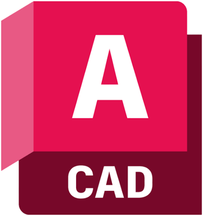
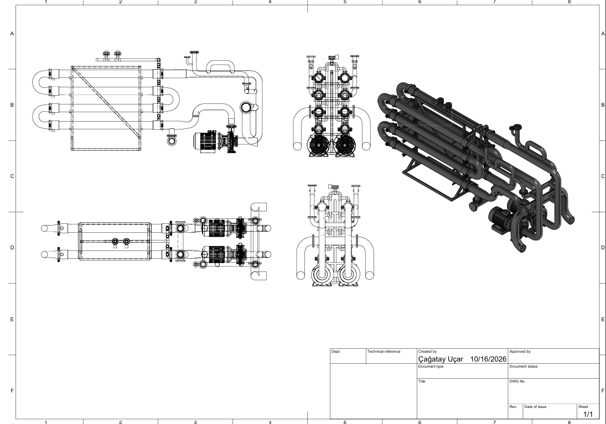
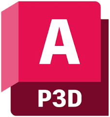
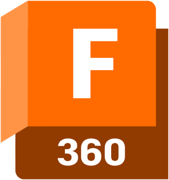
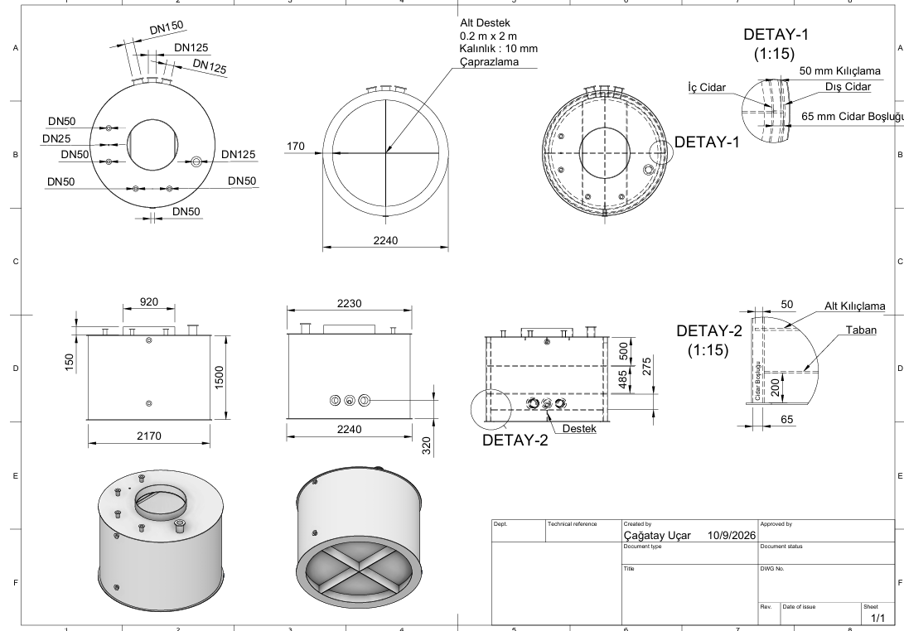
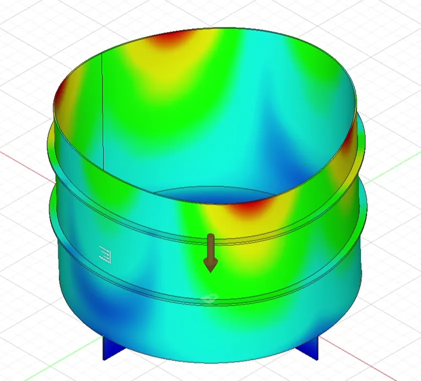

AutoCAD
2D imalat çizimleri, flanş ve bağlantı elemanı profilleri; lazer kesim için hazırlama.

Çağatay Uçar. Çevre&Proje Mühendisi. 3D modelleme, borulama ve süreç tasarımı.
Tasarım
AutoCAD Plant 3D’de 3D yerleşim, borulama ve malzeme listesi.
İmalat
Flanş ve bağlantı elemanları, lazer kesime hazır çizimlerle.
Devreye alma
Tesis çalışana kadar sahada, sonrasında işletmede.
Model: çift UF skid’i
Sızıntı suyu ve atıksu arıtma tesislerini 3D çizer, imalata hazırlar ve sahada devreye alırım.
Çöp sızıntı suyu ve atıksu arıtma tesisleri projelerinde uzmanlaşan çalışma alanları:
Çizimden imalata, borulamadan analize.

2D imalat çizimleri, flanş ve bağlantı elemanı profilleri; lazer kesim için hazırlama.

3D borulama, P&ID, izometrik ve malzeme listesi (BOM) çıktıları.

İmalat modelleri, hidrostatik basınç altında FEA simülasyonu ve teknik resim.
Üretime giden modellerin kendisi, tarayıcıda gerçek zamanlı.
Sürükle: döndür.Yana kaydır: döndür.
İkili ultrafiltrasyon skid’i.
Model yükleniyor

Çift cidarlı tank.
Model yükleniyor
Tank, taşıyıcı şasi ve nozul bağlantıları tek modelde.
Model yükleniyor
Fusion ortamında gerçekleştirilen hidrolik ve statik simülasyonlar sayesinde, olası deformasyon noktaları üretim öncesi kusursuz şekilde analiz ediliyor.
Yer değiştirme
Kaydırdıkça simülasyon ilerler.

UF, CIP ve NF hatlarını gösteren P&ID.
AutoCAD Plant 3D’den üretilen izometrikler.
Proje, imalat çizimi ya da devreye alma için yazın.